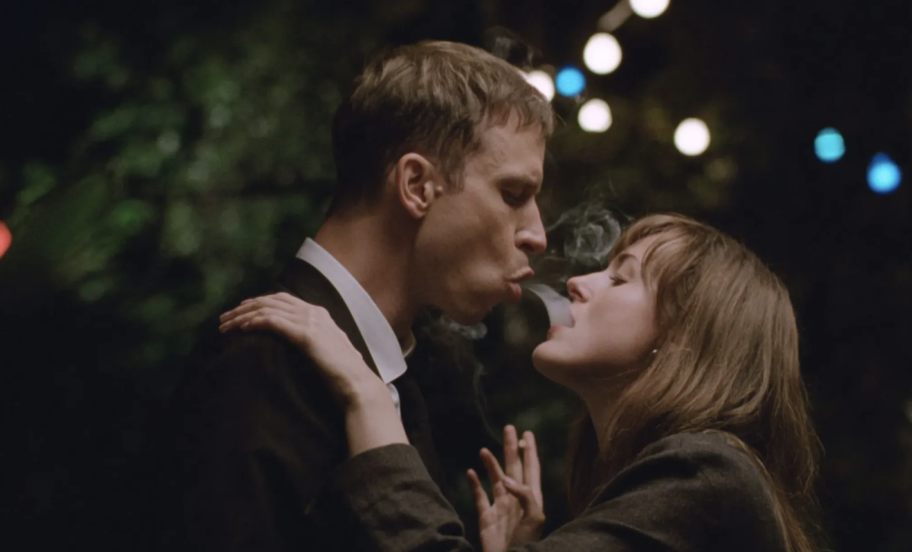
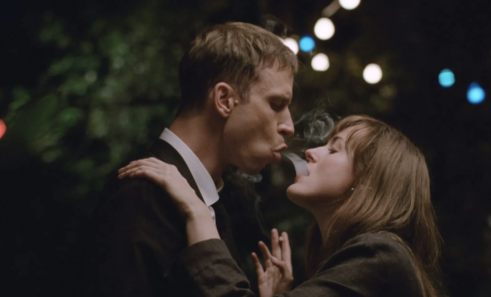
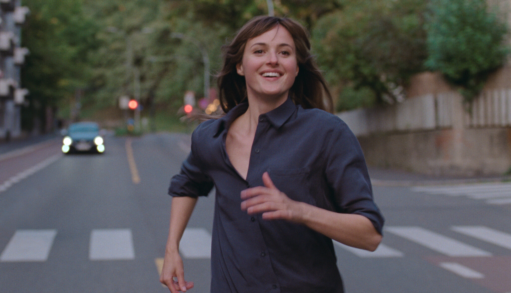
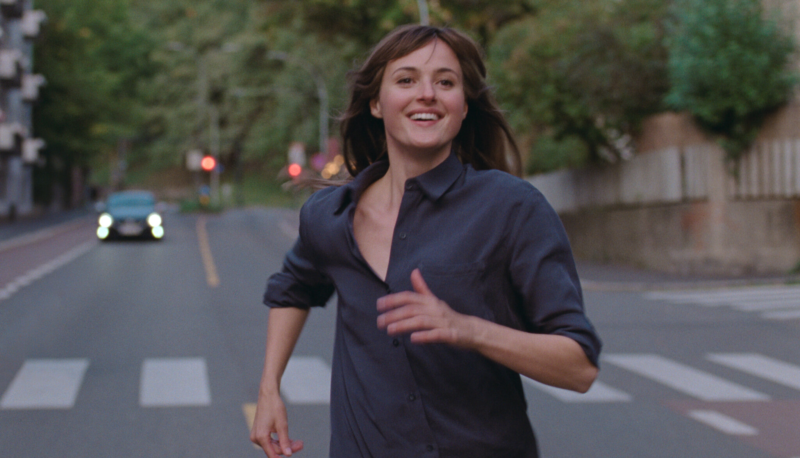

THE WORST PERSON
IN THE WORLD
Country/ Countries: Norway/ Sweden/ Denmark/ France
Language(s): Norwegian, English
Director: Joachim Trier
Starring: Renate Reinsve, Anders Danielsen Lie, Herbert Nordrum
Synopsis
Set in contemporary Oslo, the film follows Julie, a young woman navigating relationships, career choices, and her aspirations and career path, embodying the millennial and Gen Z experience of grappling with self-identity amidst a culture of limitless options.
Insight on the film
Relatable Exploration of Modern Existentialism: Julie’s journey is filled with indecision and
self-doubt, reflecting the pressures many young adults face in a world that constantly demands
self-definition and achievement. Her story validates the messiness of life choices and reminds audiences
that it’s okay to be uncertain or to change paths. This resonates especially with those feeling societal
or personal expectations to "have it all figured out."
Raw Depiction of Relationships: The film captures the complexities of modern relationships with
an honesty that feels fresh. Julie’s romantic relationships with Aksel, an older comic artist, and
Eivind, a barista she meets by chance, portray love’s different forms, from passionate intensity to
comforting companionship. By showing these nuanced dynamics, the film invites audiences to reflect on
the expectations, sacrifices, and personal growth accompanying each connection.
Unflinching Portrayal of Regret and Acceptance: *The Worst Person in the World* doesn’t shy away
from portraying Julie’s mistakes and regrets. Her struggles with failed relationships and missed
opportunities resonate with audiences, underscoring that feelings of inadequacy, self-criticism, and
guilt are universal. The film suggests that forgiving oneself and embracing imperfection are vital steps
in self-acceptance.
What I loved
There’s a restlessness that arises within when, by society’s punitive standards, one’s youth begins
inevitably fading away. As you perform the taxing charade of adulthood, with your twenties now concluded
and your thirties ticking down, the urgency to become, to achieve, to fall in love forever, all to prove
you’ve got something to show for your earthbound time, settles in. The feeling that the burning light of
promise is quickly extinguished, consumed by the status quo-imposed milestones, drives “The Worst Person
in the World.”
“I Feel Like Never See Anything Through. I Go From One Thing To Another.”** Part of what
makes [Julie a relatable
protagonist]is her
admission of her faults and flaws. Her raw honesty about what she thinks and feels is refreshing, even
though it is sometimes hard for people like Aksel to hear.
In addressing the necessary selfishness to let herself move along based on her intuitiveness, she
shows deep compassion for the human being on the other side of every schism. It’s in those scenes where
Julie and Aksel air out their sorrow for the things that might never come to pass between them, that
Trier captures an almost shocking display of honesty, rid of any defensive armour. Here are two people
that love each other, who can come to terms with the impossibility of their union at this moment in
time.
Brief on production
Production: Each chapter in “The Worst Person in the World” feels like a complete, unique thought
encapsulating
something real in unrealistic visual terms—like the tracks on an eclectic album, which even if they vary
in tone comprise a cohesive whole. With Tuxen and editor [Olivier Bugge
Coutté] embellishing the playfulness
of the screenplay, Trier conceives highly stimulating instances such as with the agile camera movements
that accompany Aksel as he plays air drums in a musical driven trance, or in the hilarious bizarreness
of a drug-induced trip that features splashes of animation.
A prime example of Trier’s cinematic ebullience is a sequence where Julie meets Eivind ([Herbert
Nordrum](https://www.rogerebert.com/cast-and-crew/herbert-nordrum)), a new lover. Both promise not to
cheat on their partners with each other, but the pair engage in a flirtatious dance of intimacy that
surpasses the carnal. Later, she dreams of making time stand still to traverse Oslo for a kiss and an
afternoon of wonder, in one of the film’s most fabulous displays of romanticism laden with the thrill of
mischief.
Acting: Reinsve’s performance is an incantation of the highest caliber, an act of pure acting magic that
fluctuates across Julie’s evolving arc. By allowing us to observe the character over time and in
distinct facets, Trier gives Reinsve a platform not only to show range but also to construct a character
in small, but immensely telling emotional modulations: her faint smile when trying not to cry or an
uncontainable grin of joy, her dancing with abandon, or the way she stands her ground with a devastating
determination. Through her, Julie comes of age at her own pace.
Music of The Worst Person in the World
Reviews
Stills
 


 
